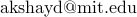

Algorithms & Complexity Seminar, MIT : Fall 2018
Organizers: Akshay Degwekar (), Pritish Kamath ( ), Govind Ramnarayan (
), Govind Ramnarayan ( )
)
The Algorithms & Complexity Seminar for Fall 2018 year will usually (unless otherwise stated) meet on Wednesdays 4pm-5pm in 32-G575 (Theory Lab on the 5th floor of the Stata Center). The style and format of these meetings are variable. Please feel free to contact the organizers to find out more details. To receive announcements of upcoming talks, subscribe to the mailing list by either visiting the mailman page or send an empty email to compalgsem-subscribe@lists.csail.mit.edu.
This website is present only for historical reasons. The current A&C Seminar website is here.
Past Talks
-
Wednesday, September 12, 2018: Anshumali Shrivastava (Rice University). [Time: 2.30-3.30pm]
Topic. Hashing Algorithms for Extreme Scale Machine Learning.Abstract. In this talk, I will discuss some of my recent and surprising findings on the use of hashing algorithms for large-scale estimations. Locality Sensitive Hashing (LSH) is a hugely popular algorithm for sub-linear near neighbor search. However, it turns out that fundamentally LSH is a constant time (amortized) adaptive sampler from which efficient near-neighbor search is one of the many possibilities. Our observation adds another feather in the cap for LSH. LSH offers a unique capability to do smart sampling and statistical estimations at the cost of few hash lookups. Our observation bridges data structures (probabilistic hash tables) with efficient unbiased statistical estimations. I will demonstrate how this dynamic and efficient sampling beak the computational barriers in adaptive estimations where, for the first time, it is possible that we pay roughly the cost of uniform sampling but get the benefits of adaptive sampling. We will demonstrate the power of one simple idea for three favorite problems 1) Partition function estimation for large NLP models such as word2vec, 2) Adaptive Gradient Estimations for efficient SGD and 3) Sub-Linear Deep Learning with Huge Parameter Space.
In the end, if time permits, we will switch to memory cost show a simple hashing algorithm that can shrink memory requirements associated with classification problems exponentially! Using our algorithms, we can train 100,000 classes with 400,000 features, on a single Titan X while only needing 5% or less memory required to store all the weights. Running a simple logistic regression on this data, the model size of 320GB is unavoidable.
Bio: Anshumali Shrivastava is an assistant professor in the computer science department at Rice University. His broad research interests include randomized algorithms for large-scale machine learning. He is a recipient of National Science Foundation (NSF) CAREER Award, a Young Investigator Award from Air Force Office of Scientific Research (AFOSR), and machine learning research award from Amazon. His research on hashing inner products has won Best Paper Award at NIPS 2014 while his work on representing graphs got the Best Paper Award at IEEE/ACM ASONAM 2014. Anshumali got his PhD in 2015 from Cornell University. -
Wednesday, October 3, 2018: Aditi Raghunathan (Stanford).
Topic. Certified Defenses against Adversarial ExamplesAbstract. While neural networks have achieved high accuracy on standard image classification benchmarks, their accuracy drops to nearly zero in the presence of small adversarial perturbations to test inputs. Defenses based on regularization and adversarial training have been proposed, but often followed by new, stronger attacks that defeat these defenses.
Can we somehow end this arms race? In this talk, I will present some methods based on convex relaxations (with a focus on semidefinite programming) that output a certificate that for a given network and test input, no attack can force the error to exceed a certain value. I will then discuss how these certification procedures can be incorporated into neural network training to obtain provably robust networks. Finally, I will present some empirical results on the performance of attacks and different certificates on networks trained using different objectives.
Joint work with Jacob Steinhardt and Percy Liang. -
Wednesday, October 17, 2018: Dylan Foster (Cornell). [Time: 3-4pm]
Topic. Online Learning, Probabilistic Inequalities, and the Burkholder MethodAbstract. At first glance, online learning and martingale inequalities may not appear to be intrinically linked. We will showcase a recently discovered equivalence between existence of algorithms for online learning, martingale inequalities, and special "Burkholder" functions. Using this equivalence as a starting point, we define a notion of a sufficient statistic for online learning and use the Burkholder method---originally used to certify probabilistic martingale inequalities---to develop algorithms that only keep these sufficient statistics in memory. To demonstrate the power of the Burkholder method we introduce new efficient and adaptive algorithms for online learning, including an algorithm for matrix prediction that attains a regret bound corresponding to the variance term found in matrix concentration inequalities. -
Wednesday, October 24, 2018: Nima Anari (Stanford).
Topic. Log-Concave Polynomials and Matroids: Algorithms and CombinatoricsAbstract. I will discuss an analytic property of multivariate polynomials, which we call complete log-concavity, and its surprising uses to attack problems in combinatorics, and algorithmic tasks such as sampling, counting, and inference on discrete distributions. This property defines a large class of discrete distributions that should be thought of as the discrete analog of the well-studied continuous log-concave distributions. Examples of distributions satisfying this property include uniform distributions over bases or independent sets of matroids, determinantal point processes and certain powers of them, the random cluster model and potts model for some regimes of parameters, and several other generalizations.
I will discuss a recipe for verifying this property and then give an application in which we resolve a combinatorial conjecture of Mason on the ultra-log-concavity of the number of independent sets of varying sizes in matroids. Then I’ll discuss connections to random sampling.
Based on joint work with Kuikui Liu, Shayan Oveis Gharan, and Cynthia Vinzant. -
Friday, October 26, 2018: Josh Alman (MIT). [Room: 32-G882]
Topic. Limits on All Known (and Some Unknown) Approaches to Matrix MultiplicationAbstract. We study the known techniques for designing Matrix Multiplication (MM) algorithms. The two main approaches are the Laser method of Strassen, and the Group theoretic approach of Cohn and Umans. We define a generalization based on zeroing outs which subsumes these two approaches, which we call the Solar method, and an even more general method based on monomial degenerations, which we call the Galactic method.
We then design a suite of techniques for proving lower bounds on the value of omega, the exponent of MM, which can be achieved by algorithms using many tensors $T$ and the Galactic method. Our main result is that there is a universal constant $c > 2$ such that a large class of tensors generalizing the Coppersmith-Winograd tensor $\mathrm{CW}_q$ cannot be used within the Galactic method to show a bound on $\omega$ better than $c$, for any $q$.
In this talk, I'll begin by giving a high-level overview of the algorithmic techniques involved in the best known algorithms for MM, and then I'll tell you about our lower bounds. No prior knowledge of MM algorithms will be assumed.
Joint work with Virginia Vassilevska Williams which appeared in FOCS 2018. -
Wednesday, October 31, 2018: Yan Gu (CMU).
Topic. Write-efficient algorithmsAbstract. The future of main memory appears to lie in the direction of new non-volatile memory technologies that provide strong capacity-to-performance ratios, but have write operations that are much more expensive than reads regarding energy, bandwidth, and latency. Such property of asymmetry in read and write costs poses the desire of "write-efficient algorithms" that use much fewer writes compared to the classic approaches.
This talk introduces the computational models we used to capture such asymmetry in algorithm design, and then briefly reviews existing results of the lower bounds on the asymmetric models, as well as a list of new write-efficient algorithms. As an example of designing write-efficient algorithms, a new parallel algorithm for planar Delaunay triangulation will be introduced, which achieves optimal numbers of writes and arithmetic operations, as well as a poly-logarithmic parallel depth. Finally, a list of open problems will be discussed that can be interesting for potential future work. -
Wednesday, November 7, 2018: Seth Neel (U. Penn). [Room: 32-G882]
Topic. How to Use Heuristics for Differential PrivacyAbstract. In this paper, we develop theory for using heuristics to solve computationally hard problems in differential privacy. Heuristic approaches have enjoyed tremendous success in machine learning, in which performance can be empirically evaluated. However, privacy guarantees cannot be evaluated empirically, and must be proven — without making heuristic assumptions. We show that learning problems over broad classes of functions — those that have universal identification sequences — can be solved privately, assuming the existence of a non-private oracle for solving the same problem. Our generic algorithm yields a privacy guarantee that only holds if the oracle succeeds. We then give a reduction which applies to a class of heuristics, which we call certifiable, which allows us to give a worst-case privacy guarantee that holds even when the oracle might fail in adversarial ways. Finally, we consider classes of functions for which both they and their dual classes have universal identification sequences. This includes most classes of simple boolean functions studied in the PAC learning literature, including halfspaces, conjunctions, disjunctions, and parities. We show that there is an efficient algorithm for privately constructing synthetic data for any such class, given a non-private learning oracle. -
Friday, November 9, 2018: Slobodan Mitrović (MIT). [Room: 32-G449]
Topic. Simple and Efficient Algorithm for Parallel MatchingsAbstract. For over a decade now we have been witnessing the success of a number of frameworks for massive parallel computation (MPC), such as MapReduce, Hadoop, Dryad, or Spark. Compared to the PRAM model, in these frameworks the number of machines is limited but each machine is allowed to perform unbounded (local) computation. A fundamental question that arise here is: can we leverage this additional power in terms of local computation to solve problems in fewer MPC than PRAM parallel rounds?
In this context, we will consider the problem of computing approximate maximum matchings in the MPC model when the memory per machine is linear in the number of vertices. We will describe some of the approaches that led to MPC algorithms of $O(\log \log n)$ round complexity -- vertex partitioning and round compression.
First, we will describe how vertex-partitioning can be used to bypass some of the difficulties that edge-based partitioning approaches encounter. Second, we will present the technique of round compression in the context of a simple greedy algorithm for computing fractional matchings.
This talk will be based on arXiv:1707.03478 and arXiv:1802.08237. -
Wednesday, November 14, 2018: Parikshit Gopalan (VMware Research). [Time: 3-4pm]
Topic. Good visualizations have short sketchesAbstract. We consider the problem of interactively visualizing a distributed tabular dataset with billions of rows. Our goal is to allow a user to browse such datasets in realtime, at any resolution, with just a few mouse clicks (much like navigating in an online map service).
We hypothesize that the sketching model of computation is tailor-made for this setting: interesting visualizations are amenable to efficient sketching protocols, whose communication cost is bounded by the size of the desired output (which is small, since it fits on screen). In this talk, we present Hillview, an open-source tool for interactive visualization of large datasets, built around this premise. We focus on the algorithmic challenges that arise in trying to render common visualizations in the sketching model.
Based on joint work with Mihai Budiu, Udi Weider, Marcos Aguilera, Lalith Suresh and Han Kruiger (all from VMware research). -
Wednesday, November 21, 2018: Jonathan Mosheiff (Hebrew University). [Room: 32-G449]
Topic. On the weight distribution of random binary linear codesAbstract. A random (binary) linear code is a dimension $\lambda n$ ($0<\lambda<1$) linear subspace of the binary $n$-dimensional hypercube, chosen uniformly from among all such subspaces. Such codes play an important role in the theory of error correcting codes, since they achieve the best known rate vs. distance trade-off, i.e., the Gilbert-Varshamov lower bound. Under a random errors regime, the problem of decoding these codes is known as Learning Parity with Noise, and has many cryptographic applications. This work is motivated by the contrast between the importance of random linear codes and how little we know about them.
Much of the interesting information about a code $C$ is captured by its weight distribution. This is the vector $(w_0,w_1, \ldots,w_n)$ where $w_i$ counts the elements of $C$ with Hamming weight $i$. In this work we study the weight distribution of random linear codes. In our main result we compute the moments of the random variable $w_{\gamma \cdot n}$, where $0 < \gamma < 1$ is a fixed constant and $n$ goes to infinity.
This is joint work with Nati Linial. -
Wednesday, December 5, 2018: Peter Manohar (UC Berkeley).
Topic. Testing Linearity against Non-Signaling StrategiesAbstract. Non-signaling strategies are collections of distributions with certain non-local correlations. In this talk, we discuss the problem of linearity testing (Blum, Luby, and Rubinfeld; JCSS 1993) against non-signaling strategies. We use Fourier analytic techniques to prove that any non-signaling strategy that passes the linearity test with high probability must be close to a quasi-distribution over linear functions. Quasi-distributions generalize the notion of probability distributions over functions by allowing negative probabilities, while at the same time requiring that “local views” follow standard distributions (with non-negative probabilities).
Based on joint work with Alessandro Chiesa (UC Berkeley) and Igor Shinkar (Simon Fraser University). -
Wednesday, December 12, 2018: Dean Doron (UT Austin).
Topic. Near-Optimal Pseudorandom Generators for Constant-Depth Read-Once FormulasAbstract. We give an explicit nearly-optimal pseudorandom generator (PRG) for constant-depth read-once formulas. Previously, PRGs with near-optimal seed length were known only for the depth-$2$ case by Gopalan et al.. For a constant depth $d > 2$, the best prior PRG is a recent construction by Forbes and Kelley with seed length $O(\log^2 n)$ for the more general model of constant-width read-once branching programs with arbitrary variable order.
Our construction follows Ajtai and Wigderson’s approach of iterated pseudorandom restrictions, and the main technical crux of our work is constructing a suitable pseudorandom restriction generator for constant-depth read-once formulas having a short seed.
Joint work with Pooya Hatami and William Hoza.
Theory Calendar
Add this calendar to yours to receive details about upcoming events in the Theory group
(includes A&C Seminars, TOC Colloquium, CIS Seminars, Theory Lunch, TOC tea and more!) :
Click on the events above to get more description about the same (title/abstract for talks, etc.)